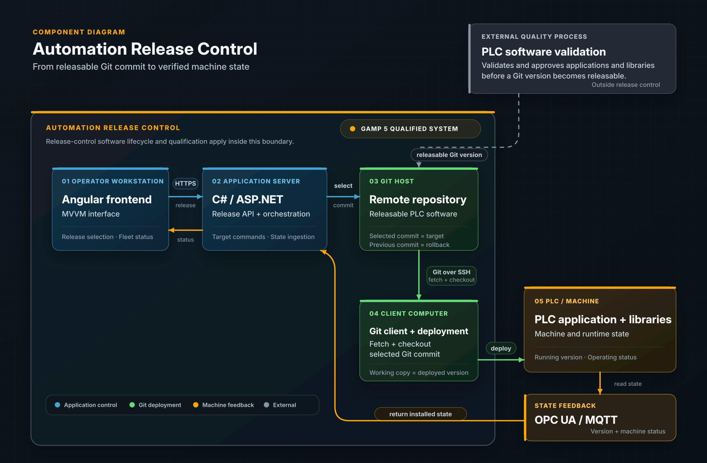

Automation Release Control
Built in 2024, the system let teams select and deploy releasable PLC software across 150+ targets, then confirm the version running on each device.
- Angular
- MVVM
- C# / ASP.NET
- Git
- GMP / CSV
- GAMP 5
- IQ / OQ
- SSH deployment
- OPC UA
- MQTT
- Release management
- PLC systems
Executive Summary
The Automation Release Control system manages versions and deployments for factory automation software. From one interface, users can release, update, or roll back PLC applications and software libraries on remote devices across the factory, without repeating each step manually at every PLC. After deployment, each device reports its installed version to the same interface, allowing the team to verify that the correct version is running.
The previous process provided inconsistent version visibility and required repetitive rollout steps by experts. I combined an Angular MVVM interface, C#/ASP.NET services, Git deployment over SSH between host and client, and OPC UA/MQTT feedback. Automation Release Control followed a GAMP 5 lifecycle and produced its own IQ/OQ qualification evidence.
Context
PLC software validation and approval occurred before a version became releasable. Automation Release Control then selected that Git version, deployed it to the target, preserved a rollback point, and compared the intended version with the version reported by the machine.
The system followed a GAMP 5 lifecycle and produced IQ/OQ qualification evidence for controlled distribution and version visibility across physical PLCs, virtual PLCs, and computers.
Problem
Teams needed one operational answer from a single record: Which releasable software version is installed on this device right now?
Version ambiguity
Releasable source, selected Git version, intended target, and actual device state could drift apart.
Manual rollout
Each change repeated operational steps and relied on specialist knowledge to reach the correct targets.
Scattered release data
Target versions, device lists, release notes, rollback points, and installed state lived in separate places.
Closed loop confirmation
Each device reported its installed version and runtime state so delivery ended with a verified result.
Solution
Each release record connected a quality approved Git commit, target system, deployment status, rollback point, and reported installed state.

UI reconstruction based on the system I designed and built. It shows version comparison, controlled deployment, and release context through approval and evidence labels.

Automation Release Control followed a GAMP 5 lifecycle and produced qualification evidence for its release workflow. The system selected a quality approved Git commit, checked it out on the client computer, deployed it to the PLC, and returned machine state through OPC UA or MQTT.
View PlantUML sourceModelled
Release domain
Releasable versions, targets, distribution status, rollback points, and installed state.
Built
Operational workflow
Angular MVVM frontend, C#/ASP.NET services, release records, and automated delivery.
Operationalized
Release across the fleet
Git deployment over SSH between host and client with OPC UA/MQTT feedback across 150+ targets.
My Involvement
I built and owned the system from the first workflow through implementation, GAMP 5 qualification, and support in the manufacturing environment.
I created the initial concept and pitch, captured user requirements, and tied the design to risk assessment and regulated release needs.
I defined releasable versions, targets, deployment state, installed state, and rollback information as one release domain.
I implemented the Angular MVVM interface, C#/ASP.NET services, Git release workflow, and feedback path for installed state.
I built the Git and SSH delivery path between host and client for releasable software across PLC and computer targets.
I integrated OPC UA/MQTT version and runtime feedback so installed device state returned to the dashboard.
I prepared IQ/OQ evidence for Automation Release Control and owned the operating workflow in the manufacturing environment.
GAMP 5 lifecycle for this system
- Prototype + pitch
- Requirements + risk
- Functional design
- Implementation + Git
- System review
- IQ/OQ qualification
- Production release
- System ownership
Outcome + Operational Impact
One controlled workflow could select, distribute, verify, and roll back releasable automation software across a heterogeneous fleet of more than 150 targets.
Controlled software distribution across physical and virtual PLC targets.
Software delivery that previously took about an hour could be completed in a few controlled clicks, with device feedback confirming the result. Specialists could focus on release decisions and exceptions.
Linked the selected Git version, target, deployment, rollback point, and installed state.
State reported by each device exposed the rollout result instead of treating delivery as proof of success.